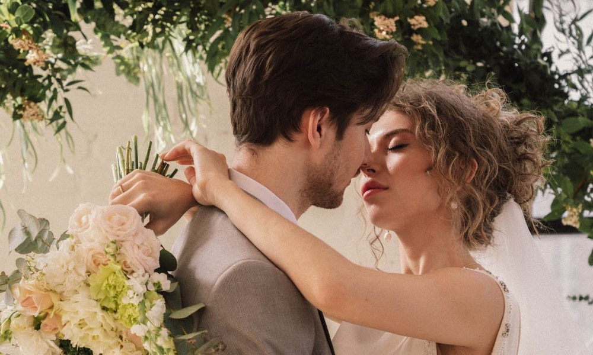
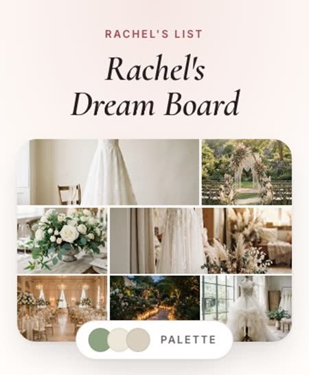

Occasions Hall (Queens Party Hall)Ozone Park, Queens
$595
up to 80 guests · Monday to Thursday base rate, hall only (Fri and Sun $1,095, Sat $1,295)
DJ booth; bring your own food
Venue's own page · read Oct 28

New York · venue prices
Last checked:
7 small venues in New York print their price in 2026: from $595 to $3,000 (room for 8 to 80 guests)
Cheapest room for 10 or more: $595, Occasions Hall (Queens Party Hall).
Each card shows the price as the venue prints it, who it fits, and what comes with it. Tap the name to open the venue's own page.
up to 80 guests · Monday to Thursday base rate, hall only (Fri and Sun $1,095, Sat $1,295)
DJ booth; bring your own food
Venue's own page · read Oct 28
30 people maximum · Standard Package: 30-minute ceremony (Gold, $1,000, adds a 30-minute photo shoot)
officiant and a 30-minute ceremony
Venue's own page · read Oct 28
up to 50 (10 more at $22 each, 60 maximum) · permit fee, weekends 9 to 10 a.m., nonrefundable
portrait photography fees included; no chairs, tables or decorations
Venue's own page · read Oct 28
8 people in all · $500 rental fee plus the required $1,500 Partner Membership; up to 90 minutes, Tue, Wed or Fri afternoons
up to 6 white ceremony chairs
Venue's own page · read Oct 28

About 90 seconds, in your browser. No affiliate links: we earn nothing from these sellers.
Free: your board and your first finds. No card to start.Every new find, each week: $9.92/month billed yearly ($119), or $24/month.
10 guests or fewer · weekends only, plus tax and service charge
1.5 hours in the space, chairs, high tops, champagne and hors d'oeuvres
Venue's own page · read Oct 28
chapel seats 20 · wedding fee (the fee schedule is titled 2024); Episcopal rules apply
building, sexton, setup, lights and sound, altar flowers; clergy at no extra fee
Venue's own page · read Oct 28
max 30 people · 3-hour rental plus prep and clean-up time
tables, chairs, linens; catering and music arranged by you
Venue's own page · read Oct 28
No venue matches both filters. Choose “Any” on one of them.
A price is for the package the venue names, on the day we read it. Ask the venue about dates, taxes and fees.
We do not quote an average, because an average hides what each venue actually prints. On this page 7 venues print prices from $595 to $3,000, each quoted from its own website on Oct 28, 2026.
2 of the 7 venues print a price under $1,000: Occasions Hall (Queens Party Hall) $595; NYC Wedding Factory $650. Prices are for the package or hours each venue names, so read the row before you book.
There is no official cutoff, so we use each venue's own words: the guest limits printed on this page run from 8 to 80 people. Every venue here prints its price for a small, micro, weekday or elopement booking.
The venue prices we verified run $595 to $3,000. Add the sample finds on this page (a $250 dress, $35 marriage license, $150 flowers, $500 photos) to the cheapest venue and you get about $1,530 before catering, rings and tax.
For a small group it can be: the cheapest verified venue ($595) plus the sample finds comes to about $1,530, and even the most expensive venue here is $3,000. A 100-guest wedding is a different budget, because this page prices small groups only.